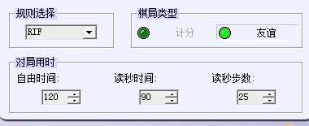

请教：orc对局中对局用时的设置
#1 请教：orc对局中对局用时的设置 作者：黄药师 发表时间：2012-5-17 21:21:01

自由时间可以理解
读秒时间和读秒步数是啥意思？
我读秒时间设为0，读秒步数设为0，结果是无限时！！！！！
如果读秒时间设为1，读秒步数设为1，请问是什么意思？
#2 Re:请教：orc对局中对局用时的设置 作者：虎哥 发表时间：2012-5-17 22:03:17
1步1分钟。［ 黄药师 于 2012-5-17 23:39:38 时花20金币送鲜花一朵］
#3 Re:虎哥【==Re:请教：orc对局中对局用时的设置==】 作者：黄药师 发表时间：2012-5-17 22:14:40
引用：是不是每X步加Y分钟？？？
原文由 虎哥 发表于 2012-5-17 22:03:17 :
1步1分钟。图中的意思是单方120分钟用完之后，每25步加90分钟。
#4 Re:请教：orc对局中对局用时的设置 作者：黄药师 发表时间：2012-5-17 22:16:50
如果读秒时间设为1，读秒步数设为1意思是每1步加1分钟？
那么如果读秒时间设为1，读秒步数设为2，应该要比上面那个加的时间少，对嘛？
#5 Re:请教：orc对局中对局用时的设置 作者：潇洒 发表时间：2012-5-17 22:25:38
LS 如果读秒时间设为1，读秒步数设为2 用完自由时间以后每分钟内要走2步。。［ 黄药师 于 2012-5-17 23:39:53 时花20金币送鲜花一朵］
#6 Re:潇洒【==Re:请教：orc对局中对局用时的设置==】 作者：黄药师 发表时间：2012-5-17 22:32:23
引用：
原文由 潇洒 发表于 2012-5-17 22:25:38 :
LS 如果读秒时间设为1，读秒步数设为2 用完自由时间以后每分钟内要走2步。。
那是不是只要是每分钟下2步，永远不会超时？？？
那么我不想加秒，想自由用时用完直接判超时，可以设置吗？
#7 Re:请教：orc对局中对局用时的设置 作者：潇洒 发表时间：2012-5-17 22:51:36
读秒时间设置为0 读秒步数可以是1到999
#8 Re:潇洒【==Re:请教：orc对局中对局用时的设置==】 作者：黄药师 发表时间：2012-5-17 23:39:24
引用：详细解释一下这个设置
原文由 潇洒 发表于 2012-5-17 22:51:36 :读秒时间设置为0 读秒步数可以是1到999
#9 Re:请教：orc对局中对局用时的设置 作者：潇洒 发表时间：2012-5-18 0:18:49
就是读秒时间为0 而要读的步数至少是1步（就是读秒的时候至少要走1步以上的棋）#10 Re:请教：orc对局中对局用时的设置 作者：一剑寒霜 发表时间：2012-5-18 7:35:36
这个东西很好理解，你把读秒时间设置为0，读秒步数设置为1或者大于1的数，系统就默认超时后，需要在0秒内走1或者多步，这是不可能完成的，所以一旦某方用完120分钟后，就自动超时判负了［ 黄药师 于 2012-5-18 10:25:48 时花20金币送鲜花一朵］
#11 Re:请教：orc对局中对局用时的设置 作者：小丸.net 发表时间：2012-5-18 9:21:14
我昨天还在研究这个问题，今天这里就有答案了，药师，你看懂了没。。。。。我看懂了#12 Re:请教：orc对局中对局用时的设置 作者：蘭妮 发表时间：2012-5-24 15:32:00
總結:
自由時間=棋局時間
讀秒時間=棋局時間用完之後的時間
限定子數=期局時間用完之後的時間內所要下出的子
舉例比較快~~
30 / 30 / 30 =30分鐘用完，請在30分鐘內下出30子
1 / 0 / 1 = 1分鐘用完，請在 0分鐘內下出 1子
（那是不可能的事情，一分鐘用完就沒了！）
1 / 1 / 0 = 1分鐘用完，請在 1分鐘內下出 0子
（這是 可能的事情，等於無限時！）
沒是冒個泡，
繼續潛水去。
#13 Re:请教：orc对局中对局用时的设置 作者：小小亦默 发表时间：2012-5-24 15:37:44
楼上繁体